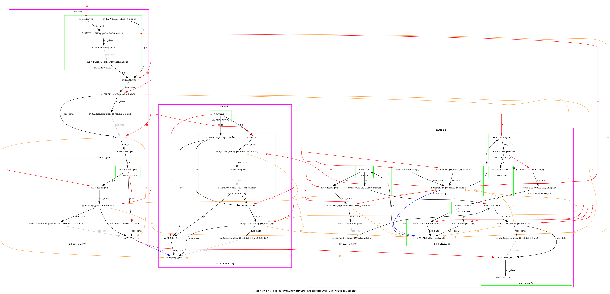
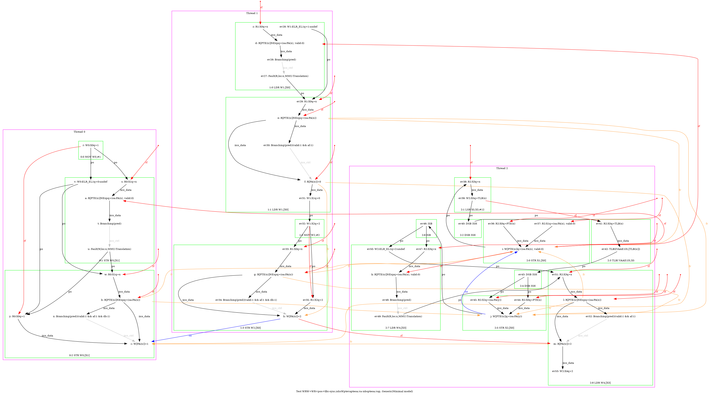
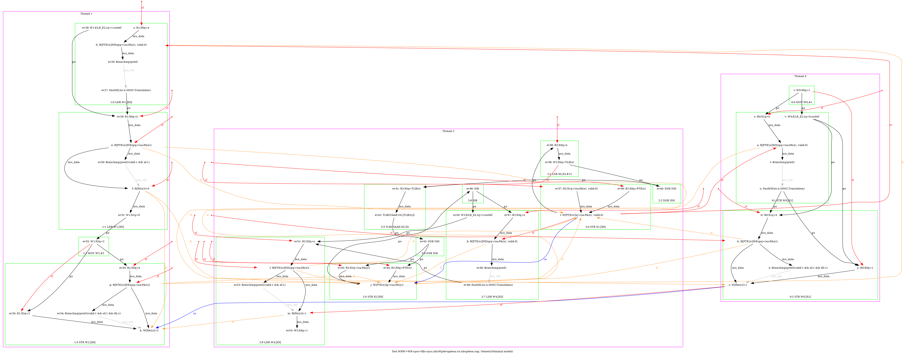
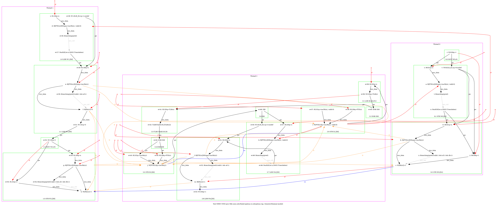

   …
AArch64 WRW+WR+pos+tlbi-sync.ishsWptevapteoa.va-isbspteoa.vap
"Rfe PosRW CoePPteVA TLBI-sync.ISHsWWPteVAPteOA.VA ISBsWRPteOA.VAP Fre"
Variant=imprecise
Cycle=Rfe PosRW CoePPteVA TLBI-sync.ISHsWWPteVAPteOA.VA ISBsWRPteOA.VAP Fre
Relax=[PteVA,TLBI-sync.ISHsWW,PteOA,PteVA,ISBsWR]
Safe=Rfe Fre Coe PosRW
Generator=diy7 (version 7.56+02~dev)
Com=Rf Co Fr
Orig=Rfe PosRW CoePPteVA TLBI-sync.ISHsWWPteVAPteOA.VA ISBsWRPteOA.VAP Fre
{ int x=0; int y=4;
0:X1=x;
1:X0=x;
2:X0=PTE(x); 2:X1=(oa:PA(x), valid:0); 2:X2=(oa:PA(y)); 2:X3=x;
}
P0 | P1 | P2 ;
MOV W0,#1 | LDR W1,[X0] | STR X1,[X0] ;
STR W0,[X1] | MOV W2,#2 | LSR X5,X3,#12 ;
| STR W2,[X0] | DSB ISH ;
| | TLBI VAAE1IS,X5 ;
| | DSB ISH ;
| | STR X2,[X0] ;
| | ISB ;
| | LDR W4,[X3] ;
exists (1:X1=0 /\ 2:X4=1 /\ [x]=2 /\ fault(P0,x,MMU:Translation) /\ fault(P1,x,MMU:Translation) /\ ~fault(P2,x)) \/ (1:X1=0 /\ 2:X4=1 /\ [x]=2 /\ fault(P0,x,MMU:Translation) /\ fault(P1,x,MMU:Translation) /\ fault(P2,x,MMU:Translation)) \/ (1:X1=0 /\ 2:X4=1 /\ [x]=2 /\ fault(P1,x,MMU:Translation) /\ ~fault(P0,x) /\ ~fault(P2,x)) \/ (1:X1=0 /\ 2:X4=1 /\ [x]=2 /\ fault(P1,x,MMU:Translation) /\ fault(P2,x,MMU:Translation) /\ ~fault(P0,x)) \/ (1:X1=0 /\ 2:X4=2 /\ [x]=1 /\ fault(P0,x,MMU:Translation) /\ ~fault(P1,x) /\ ~fault(P2,x)) \/ (1:X1=0 /\ 2:X4=2 /\ [x]=1 /\ fault(P0,x,MMU:Translation) /\ fault(P1,x,MMU:Translation) /\ ~fault(P2,x)) \/ (1:X1=0 /\ 2:X4=2 /\ [x]=1 /\ fault(P0,x,MMU:Translation) /\ fault(P1,x,MMU:Translation) /\ fault(P2,x,MMU:Translation)) \/ (1:X1=0 /\ 2:X4=2 /\ [x]=1 /\ fault(P0,x,MMU:Translation) /\ fault(P2,x,MMU:Translation) /\ ~fault(P1,x)) \/ (1:X1=0 /\ 2:X4=4 /\ [x]=1 /\ fault(P0,x,MMU:Translation) /\ ~fault(P1,x) /\ ~fault(P2,x)) \/ (1:X1=0 /\ 2:X4=4 /\ [x]=1 /\ fault(P0,x,MMU:Translation) /\ fault(P1,x,MMU:Translation) /\ ~fault(P2,x)) \/ (1:X1=0 /\ 2:X4=4 /\ [x]=1 /\ fault(P0,x,MMU:Translation) /\ fault(P1,x,MMU:Translation) /\ fault(P2,x,MMU:Translation)) \/ (1:X1=0 /\ 2:X4=4 /\ [x]=1 /\ fault(P0,x,MMU:Translation) /\ fault(P2,x,MMU:Translation) /\ ~fault(P1,x)) \/ (1:X1=0 /\ 2:X4=4 /\ [x]=2 /\ fault(P0,x,MMU:Translation) /\ fault(P1,x,MMU:Translation) /\ ~fault(P2,x)) \/ (1:X1=0 /\ 2:X4=4 /\ [x]=2 /\ fault(P0,x,MMU:Translation) /\ fault(P1,x,MMU:Translation) /\ fault(P2,x,MMU:Translation)) \/ (1:X1=0 /\ 2:X4=4 /\ [x]=2 /\ fault(P1,x,MMU:Translation) /\ ~fault(P0,x) /\ ~fault(P2,x)) \/ (1:X1=0 /\ 2:X4=4 /\ [x]=2 /\ fault(P1,x,MMU:Translation) /\ fault(P2,x,MMU:Translation) /\ ~fault(P0,x)) \/ (1:X1=1 /\ 2:X4=2 /\ [x]=1 /\ fault(P0,x,MMU:Translation) /\ ~fault(P1,x) /\ ~fault(P2,x)) \/ (1:X1=1 /\ 2:X4=2 /\ [x]=1 /\ fault(P0,x,MMU:Translation) /\ fault(P1,x,MMU:Translation) /\ ~fault(P2,x)) \/ (1:X1=1 /\ 2:X4=2 /\ [x]=1 /\ fault(P0,x,MMU:Translation) /\ fault(P1,x,MMU:Translation) /\ fault(P2,x,MMU:Translation)) \/ (1:X1=1 /\ 2:X4=2 /\ [x]=1 /\ fault(P0,x,MMU:Translation) /\ fault(P2,x,MMU:Translation) /\ ~fault(P1,x)) \/ (1:X1=1 /\ 2:X4=4 /\ [x]=1 /\ fault(P0,x,MMU:Translation) /\ ~fault(P1,x) /\ ~fault(P2,x)) \/ (1:X1=1 /\ 2:X4=4 /\ [x]=1 /\ fault(P0,x,MMU:Translation) /\ fault(P1,x,MMU:Translation) /\ ~fault(P2,x)) \/ (1:X1=1 /\ 2:X4=4 /\ [x]=1 /\ fault(P0,x,MMU:Translation) /\ fault(P1,x,MMU:Translation) /\ fault(P2,x,MMU:Translation)) \/ (1:X1=1 /\ 2:X4=4 /\ [x]=1 /\ fault(P0,x,MMU:Translation) /\ fault(P2,x,MMU:Translation) /\ ~fault(P1,x)) \/ (1:X1=1 /\ 2:X4=4 /\ [x]=2 /\ fault(P0,x,MMU:Translation) /\ ~fault(P1,x) /\ ~fault(P2,x)) \/ (1:X1=1 /\ 2:X4=4 /\ [x]=2 /\ fault(P0,x,MMU:Translation) /\ fault(P1,x,MMU:Translation) /\ ~fault(P2,x)) \/ (1:X1=1 /\ 2:X4=4 /\ [x]=2 /\ fault(P0,x,MMU:Translation) /\ fault(P1,x,MMU:Translation) /\ fault(P2,x,MMU:Translation)) \/ (1:X1=1 /\ 2:X4=4 /\ [x]=2 /\ fault(P0,x,MMU:Translation) /\ fault(P2,x,MMU:Translation) /\ ~fault(P1,x)) \/ (1:X1=1 /\ 2:X4=4 /\ [x]=2 /\ fault(P1,x,MMU:Translation) /\ ~fault(P0,x) /\ ~fault(P2,x)) \/ (1:X1=1 /\ 2:X4=4 /\ [x]=2 /\ fault(P1,x,MMU:Translation) /\ fault(P2,x,MMU:Translation) /\ ~fault(P0,x)) \/ (1:X1=4 /\ 2:X4=2 /\ [x]=1 /\ fault(P0,x,MMU:Translation) /\ ~fault(P1,x) /\ ~fault(P2,x)) \/ (1:X1=4 /\ 2:X4=2 /\ [x]=1 /\ fault(P0,x,MMU:Translation) /\ fault(P1,x,MMU:Translation) /\ ~fault(P2,x)) \/ (1:X1=4 /\ 2:X4=2 /\ [x]=1 /\ fault(P0,x,MMU:Translation) /\ fault(P1,x,MMU:Translation) /\ fault(P2,x,MMU:Translation)) \/ (1:X1=4 /\ 2:X4=2 /\ [x]=1 /\ fault(P0,x,MMU:Translation) /\ fault(P2,x,MMU:Translation) /\ ~fault(P1,x)) \/ (1:X1=4 /\ 2:X4=4 /\ [x]=1 /\ fault(P0,x,MMU:Translation) /\ ~fault(P1,x) /\ ~fault(P2,x)) \/ (1:X1=4 /\ 2:X4=4 /\ [x]=1 /\ fault(P0,x,MMU:Translation) /\ fault(P1,x,MMU:Translation) /\ ~fault(P2,x)) \/ (1:X1=4 /\ 2:X4=4 /\ [x]=1 /\ fault(P0,x,MMU:Translation) /\ fault(P1,x,MMU:Translation) /\ fault(P2,x,MMU:Translation)) \/ (1:X1=4 /\ 2:X4=4 /\ [x]=1 /\ fault(P0,x,MMU:Translation) /\ fault(P2,x,MMU:Translation) /\ ~fault(P1,x))